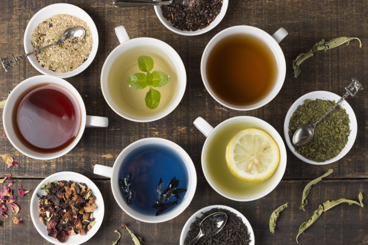
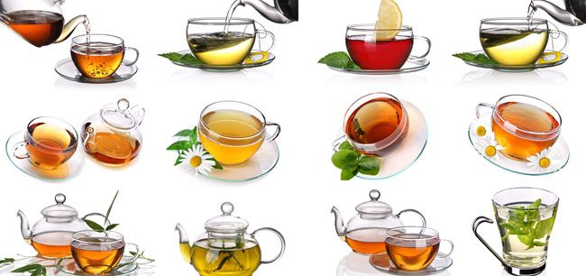

[immagine:Raccolto da Google]
>If this is coffee,please bring some tea,if this is tea,bring me some coffee.
-Abraham Lincon

Il tè (o meno correttamente the o thè[1]) è una bevanda originaria della
civiltà cinese, consistente
in un infuso o decotto ricavato dalle foglie della Camellia sinensis, una
pianta legnosa che viene oggi coltivata in Cina, ma anche in Bangladesh,
Pakistan, India, Indonesia, Sri Lanka,
l Giappone e Kenya. A volte le foglie sono miscelate con spezie, erbe o
essenze. L'uso e i cerimoniali del tè sono associati a differenti
tradizioni rituali dell'Estremo Oriente.
Un altro Paese noto per il consumo del tè, sin dall'epoca coloniale quando
iniziò a importarlo in Occidente,
è il Regno Unito, che ne ha fatto quasi un simbolo nazionale.

l tè ha una ampia gamma di aromi: floreale, fruttato, dolce, erbaceo
oppure un sapore volutamente amaro
e astringente[2] ed è la bevanda più
diffusa nel mondo dopo l'acqua[3]. A partire dagli anni ottanta del XX
secolo si è diffuso l'utilizzo del "tè freddo", un prodotto per lo piùl
industriale
ottenuto dall'infusione del tè e imbottigliato,servito dopo
essere stato in frigorifero come.bevanda rinfrescante: i tipi più diffusi
sono il tè al limone e il tè alla pesca.